Rainfall Dev Blog #2: Feb 2018 - Apr 2018
From February until the end of April, our primary goal for “Rainfall ~ Do You Still Like This World?” was to complete the first major arc of the game centering around Marisa “Mari” Yamashiro.
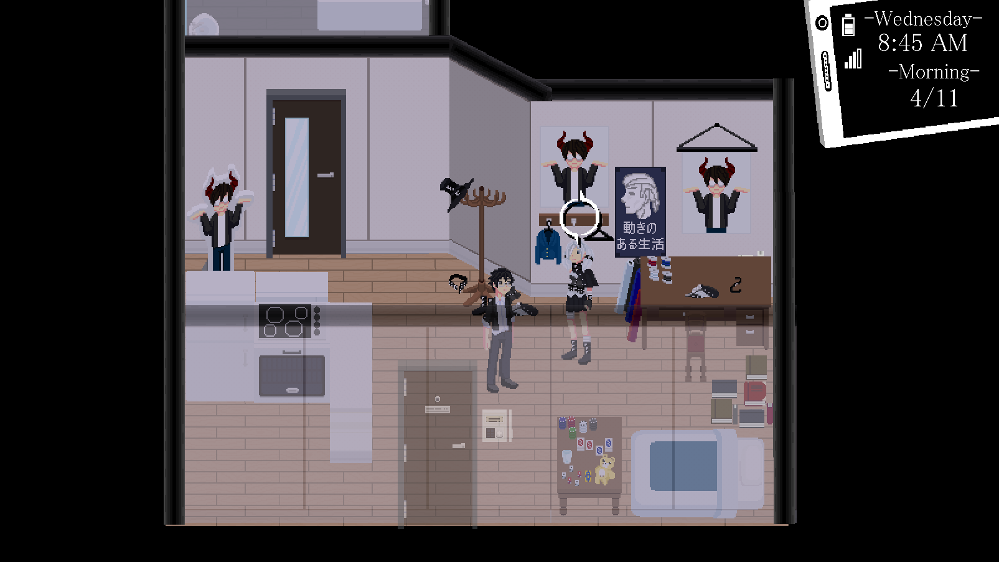Mari is a high school student living on her own, working various part-time jobs to support her strange lifestyle as her parents work abroad. Though she tends to barely make ends meet due to her clumsiness and personality repeatedly getting her reduced wages or fired from her jobs. However, despite her failings she holds the keen sense, or dumb luck, of a legendary gambler whose vast winnings would create a comfortable life if the majority of it was not funneled into the cosplay of her "chunni" persona. A kind girl despite air-headed delusions, she is a massive fan of Jin’s light novels, referring to him as the “Darkness-Sama” of “You’ll have to believe me when I say I’m a Demon Lord” his first and most famous work as a light novelist.
Locations
Many of the locations in our game were already placed into the world, but lacked the capacity to interact with them in any meaningful way. We focused on adding the ability to enter every building that was created and crafting the scenes, shopkeepers, and free time activities that would fill this gap.
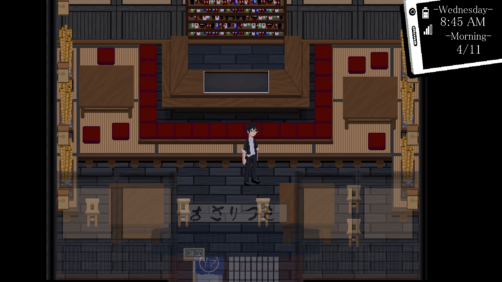Dimmed lights, open layout, and light smoke throughout, the Izakaya was designed to have a cozy atmosphere with the intent of mirroring the feel of getting drunk with your friends and the random patrons at the local pub. It should be loud and comforting and is one of the few places frequented by both Jin and Akane.
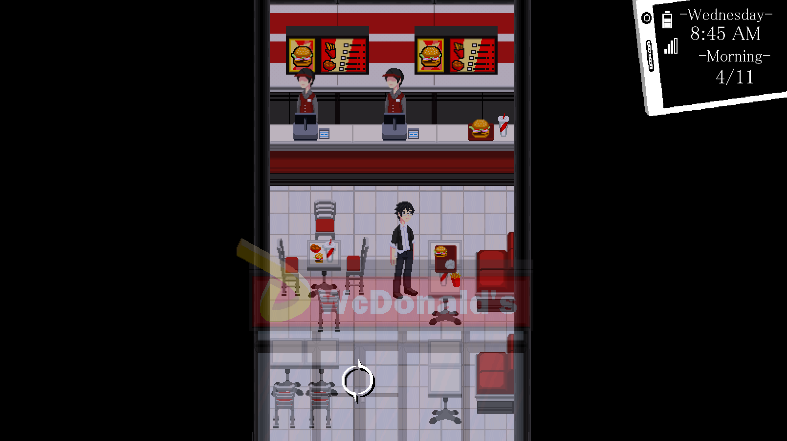 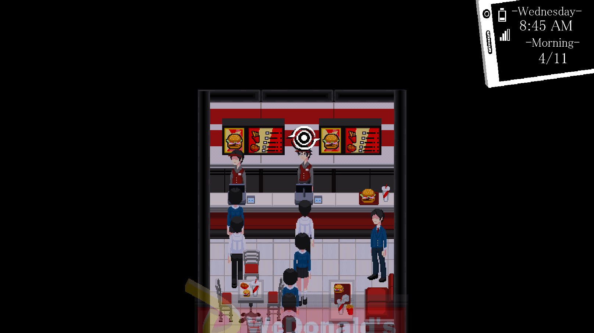We added in the first part time job of the game at WcDonalds as well as the opportunity to level up your Shonen writing abilities.
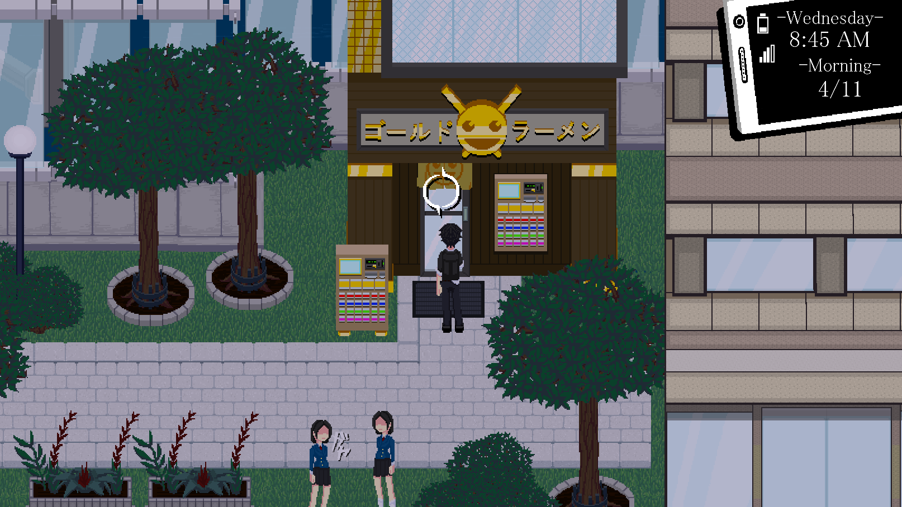 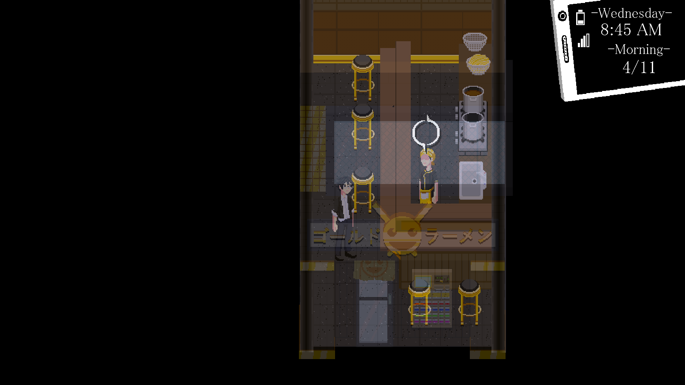Golden Noodle introduced the shopkeeper system to the game where you can buy and sell certain items to each shopkeeper. This system was then propagated to other shops like Book Down, Wave, and the Otaku Goods shop each with their own shopkeepers specializing in their own items.
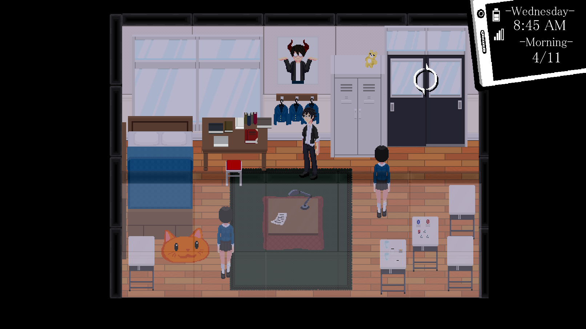The Literature Club is one of many clubs on campus but was facing the risk of being disbanded due to the lack of a supervisor which Akane resolves by forcing Jin into the role. Both Jin and Reiji come in and offer their help to the club, reviewing their work and offering brutally honest critiques of how they can improve.
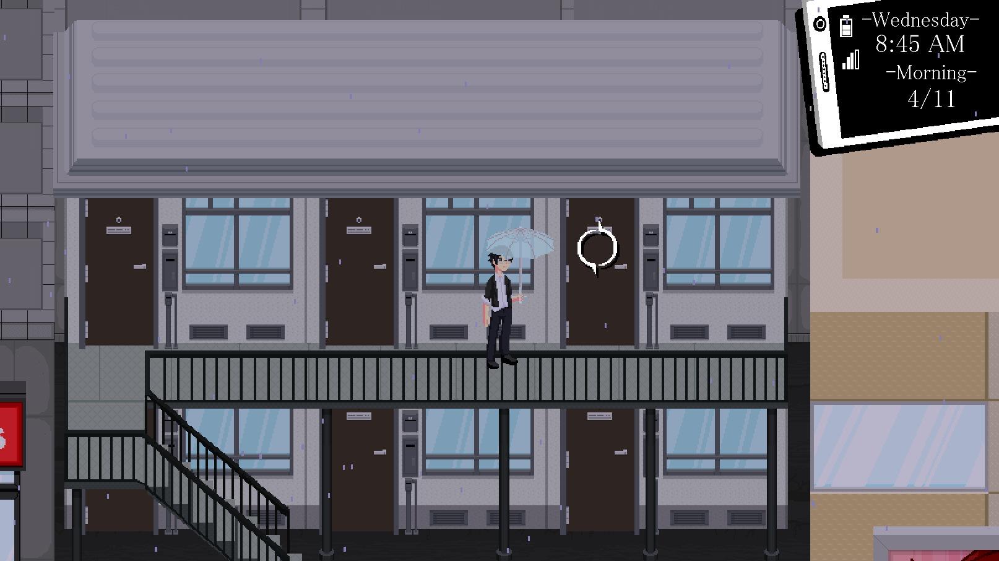Mari lives in a small apartment near the train station with an interior designed to look visually similar to Jin’s. She has a rather messy apartment with various Darkness-sama memorabilia scattered around, her clothes lying on the floor and random equipment taking up the bulk of desk space. Although she isn’t book smart, Mari is quite skilled in both sewing, which she uses to design her own costumes, and in gambling, which allows her to make some extra money to support herself outside of her part-time jobs.
Relationships
During free time segments of our game, the player can choose to spend time either increasing their various stats, work part time shifts at different locations, or interact and hang out with the people that they’ve become friendly with. Each of these relationships will start at Rank 0 and can be leveled up to Rank 10 with each interaction event causing a rank up. Different rank levels also carry different rewards with them.
As part of this development cycle, we created the first relationship of the game with Toro’s Arc as well as introducing the fishing minigame that is progressively unlocked through his events.
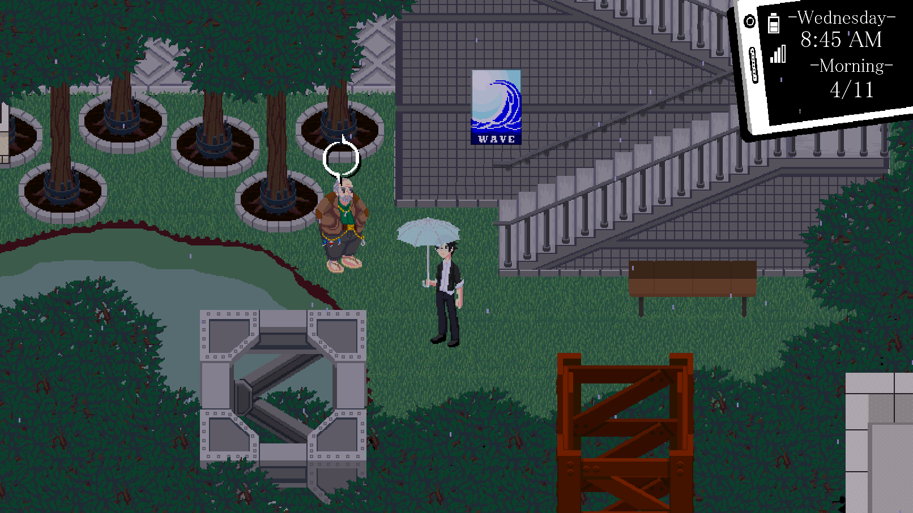
Menu
The third core component of our game is fast-paced, dungeon-crawling action combat. Our character embodies the character ideals of the rogue archetype. Game-play is a high speed affair where the player will be expected to navigate through danger by weaving together many strikes and dashes to simultaneously avoid damage, clear projectiles, and defeat their enemies. The dash in our game is short and fast but offers no invincibility frames, and functions as tool for getting out of a bad situation or to offer better positioning for their own offense.
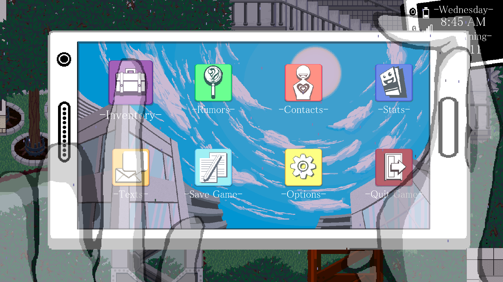 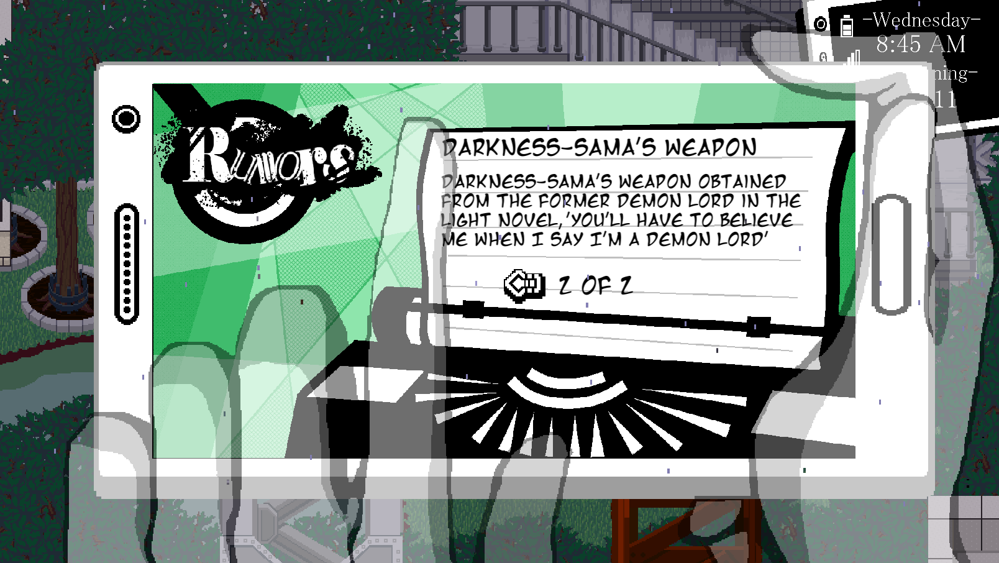 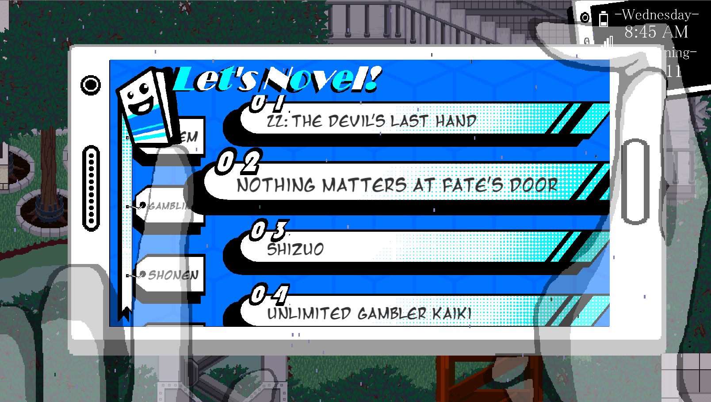
What's Next?
Our next goal is to fill in the rest of Mari’s Arc based off of feedback from playtest sessions. We want to add in more scenes to flesh out Mari and Akane’s characters as well as change the pacing of Mari's character arc to ramp up more slowly than it does currently. We also want to introduce Yumeko’s Relationship story both within the main story and the free time activities that cover her character arc.
There are several new buildings we want to add to the city to fill out the north eastern portion of the city and we want to complete the free time activities for all current and new buildings, some of which include a Tennis Club activity, a museum for displaying the collectibles of the game, a bath house, Mega Club Arcade games, and fishing
Finally, we want to do a version 2 of both our text message system with a scripting setup close to how we compose our active choice scenes and of the way we do the Character Busts that show up in the dialogue.